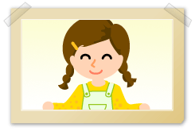
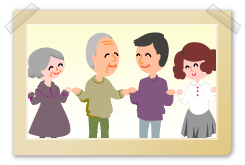

|

|
 |
 |
| 気持ちに添ったケアは、ご本人の理解から。 |
 |
認知症の人の日常生活を阻害しないで、目で確認できる範囲で行動を観察し、現状把握を行うことを見守り・観察ケアといいます。
見守りケアは、ケア提供者間の情報交換や協力が大切となります。
まず見守る場所から離れる際は、新たに見守りをするケア提供者に「場を離れること」｢今までの観察内容｣を正確に伝えなければなりません。また身体の不調や周辺症状などを観察していくことも含まれます。
周辺症状が現れる時間帯、原因、環境などもこの見守りケアから見えてくるものと考えられます。また身体の不調も、日常生活の見守りを通して把握できるでしょう。 |
認知症の人は身体の変調や不具合を言葉で十分に表現できないことや、健康管理についての認識もかなり低くなることから、健康管理は認知症の人にとって大切なケアの1つになります。
健康を害してないか見きわめるためには、1.既往歴を見逃さない、2.検査データを見る、3.食事・水分摂取状況、4.排泄状況、5.顔色や皮膚の状態、6.服薬の情報、7.いつもの日常生活の把握、は欠かせない大切な観察項目になります。「おかしい」と思ったらすぐに医療チームと連携をとり行動しましょう。
また水分摂取量が減ってしまい、薬の副作用で、身体に異常をきたす場合もあるので、この点にも細やかな配慮が必要です。 |
具体的には、ケアの場面で相手の話を十分に聴き、気持ちを支えることです。
今どうありたいのか、何をしたいのかを理解し、認知症の人の感情・行動の意味などを思い測り、ケア提供者は身体言語を活用して表現します。
以下は具体的なかかわりの意味についての気づきです。
名前を呼ぶ意味
認知症になったからといって人はプライドを失いません。名前はその人が生まれたときから使っています。呼んでもわからないと勝手に介護者が判断して、名前も呼ばずに食事を用意したり、排泄の世話をするなどしがちですが、まず「○○さん」ということによってあなたの為の食事ですよ。という気持ちが伝わります。かつて能力にあふれ、知性をもって生きてきた人です。敬意をもって接するという気持ちは名前を呼ぶことによっても
相手に伝わります。
質問の意味
開かれた質問をし、会話を広げ、話を聴くかかわり姿勢をもつことも大切なことです。
この開かれた質問とは、「何が～？」「なぜ～？」「どのように～？」などで始まる質問であり、一言二言では答えられず、対象者が主体的に話しをする形で展開するものです。
対象者が認知症の場合、開かれた質問を避け、どうしても簡単な返答を求めがちになります。開かれた質問を多くすることを心がけ、心に沿えるケアを展開したいものです。
かかわる意味
例えば「家に帰りたい」という人に対してどんな気持ちであるのか推し量り、「会いたいですね」「心配ですね」など不安な気持ちや感情に共感するような言葉かけを行うことです。 認知症ケアではよく「ありのままを受け止める」「あるがままを受け止める」といわれますが、具体的にかかわらない限り、受け止めることはできません。周辺症状で悩む対象者を外側から眺めているだけでは、ありのままは受け止められません。 しっかりとかかわり、相手の気持ち・感情をお互いに確認して初めて「ありのままを受け止めらえる」と考えます。
共に行動する意味
「行動を共にする」、それは対象者に寄り添い歩く、共に食事をつくる、外出するなどが挙げられます。ケア提供者は、対象者が今何をしたいのか、どう動きたいのかという気持ち・感情に沿う形で行動を起こしていきます。
たとえば対象者が今横になっていたいのに、ケア提供者が「起きて一緒にお茶を飲もう」と誘います。横になってばかりいたら、寝たきりになってしまうとはいいますが、それでは、対象者は起きる気にはならないでしょう。
必要なのは、「起きてくれない対象者をどう動かそうか」ではなく、「どうしたら起きてお茶を飲みたい気持ちになってくれるのか」を視野に入れた行動です。
|
認知症高齢者の今ある能力を把握し、何ができるのかを理解し、興味・関心を探ることです。生活史を参考にしてもよいし、新しいチャレンジでもよいでしょう。かかわりケアや気分転換のケアを通じて、情報を収集するように心がけます。
興味・関心を探ることで対象者にとって1つの役割を獲得するという効果もあります。
例えば野菜を作っていた人が認知症になり、野菜が育っていく楽しみを感じられなくても、野菜づくりにふれあうことはできます。 |
新しい情報提供や助言を行い、執着している感情を他に向ける努力をすることです。
例えば「家に帰りたい」と歩いている人にお昼ごはんの話題で場面や気分を切り換えることです。
具体的には、1.声の調子やタイミングに配慮する、2.お茶・おやつ・食事などの誘導を行い、場を変えたりして気分を切り換える、3.認知症高齢者の関心事を活用するなどの配慮が必要です。 |
|